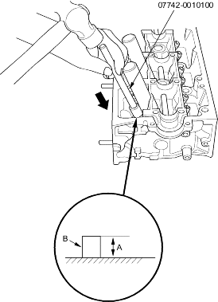
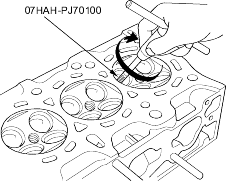

- Apply a thin coat of clean engine oil to the outside of the new valve guide. Install the guide from the camshaft side of the head; use the special tool to drive the guide in to the specified installed height (A) of the guide (B). If you have all 16 guides to do, you may have to reheat the head.
Valve Guide Installed Height:
| Intake: | 17.85 - 18.35 mm (0.703 - 0.722 in.) |
| Exhaust: | 18.65 - 19.15 mm (0.734 - 0.754 in.) |

- Coat both reamer and valve guide with cutting oil.
- Rotate the reamer clockwise the full length of the valve guide bore.

- Continue to rotate the reamer clockwise while removing it from the bore.
- Thoroughly wash the guide in detergent and water to remove any cutting residue.
- Check the clearance with a valve (see page 6-43). Verify that the valve slides in the intake and exhaust valve guides without exerting pressure.